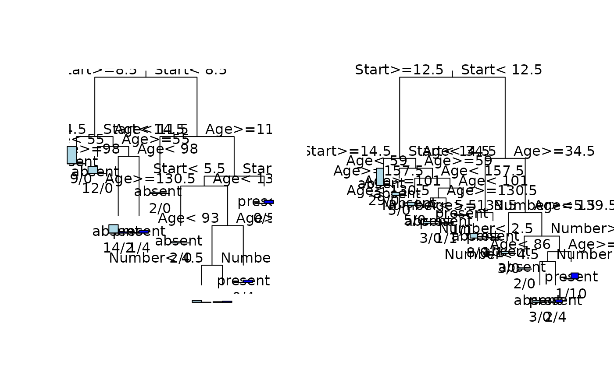

Data on Children who have had Corrective Spinal Surgery
kyphosis.RdThe kyphosis data frame has 81 rows and 4 columns.
representing data on children who have had corrective spinal surgery
Usage
data(kyphosis)Format
This data frame contains the following columns:
Kyphosisa factor with levels
absentpresentindicating if a kyphosis (a type of deformation) was present after the operation.Agein months
Numberthe number of vertebrae involved
Startthe number of the first (topmost) vertebra operated on.
Source
John M. Chambers and Trevor J. Hastie eds. (1992) Statistical Models in S, Wadsworth and Brooks/Cole, Pacific Grove, CA 1992.
Examples
data(kyphosis)
fit <- rpart(Kyphosis ~ Age + Number + Start, data=kyphosis)
fit2 <- rpart(Kyphosis ~ Age + Number + Start, data=kyphosis,
parms=list(prior=c(.65,.35), split='information'))
fit3 <- rpart(Kyphosis ~ Age + Number + Start, data=kyphosis,
control=rpart.control(cp=.05))
par(mfrow=c(1,2))
plot(fit)
text(fit, use.n=TRUE)
plot(fit2)
text(fit2, use.n=TRUE)
